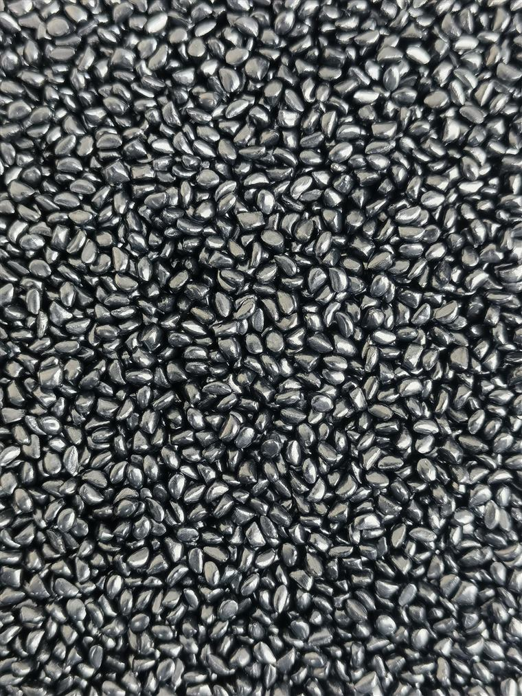
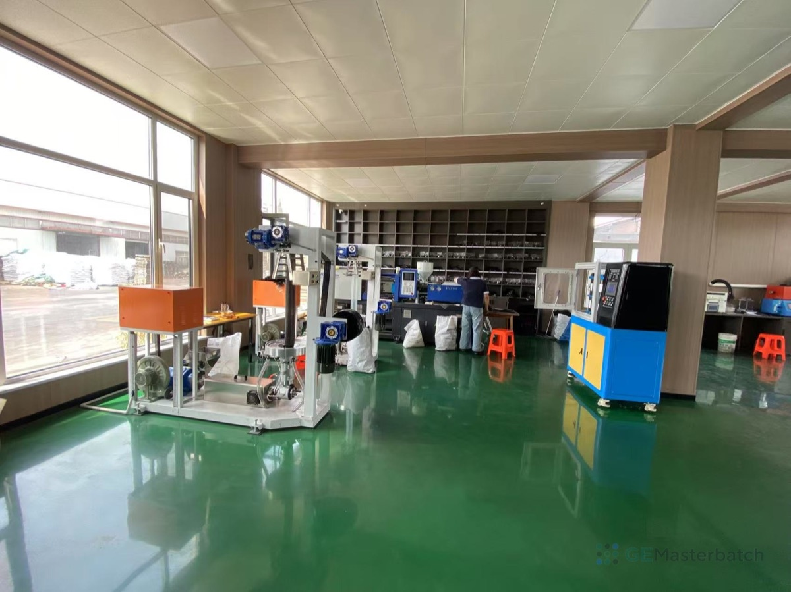

More depth or coverage
Define the blackness target, final part, film thickness or coverage context.
Black masterbatch / Buyer guide
For film, injection molding and recycled PE/PP inquiries. Share the resin, process, blackness target, dispersion issue, current grade and document need before a grade is reviewed.

01 / Buyer problems
Most black masterbatch inquiries begin with a production problem or an existing grade. Start from the condition that has to change.
Define the blackness target, final part, film thickness or coverage context.
Share the defect sample, current grade, dose and process condition for review.
Describe the recycled content, current variation and reference sample.
Include the existing grade, resin, process, target and reason for replacement.
02 / RFQ desk
These are the inputs that make a black masterbatch review useful. If a detail is unknown, label it as unknown rather than filling in a generic value.

PE, PP, LDPE, LLDPE, HDPE or the resin named on the current specification.
Blown film, injection molding, extrusion, re-granulating or another process.
Film, bag, molded part, profile, recycled compound or distributor inquiry.
Coverage, appearance, comparison sample or current customer requirement.
Spots, streaks, inconsistent color, poor coverage or another observed condition.
Existing supplier grade, model or reference, if available.
Trial quantity and estimated monthly volume, marked as preliminary if needed.
TDS, SDS/MSDS, COA or compliance-related review for the exact application.
03 / Process context
Use the closest application context to frame the review. Suitability still depends on exact grade, resin, process and product target.
Film structure, thickness, appearance and the current dispersion condition.
Keyword context: black masterbatch for film.
Part surface, color coverage, visible spots and current processing condition.
Keyword context: black masterbatch for injection molding.
Final profile, resin, equipment context and target appearance.
Review by exact application, not by category alone.
Feedstock variation, control sample, current dose and observed color difference.
Keyword context: black masterbatch for recycled plastic.
04 / Document desk
Technical documents are requested by form. The team reviews product grade, application, destination and document purpose before replying by email.
Check grade, revision and test conditions.
Where available for the supplied product.
Batch-level information where available.
Compliance-related reports apply only to the tested grade or sample.
Next step / Black masterbatch
Share the resin, process, end product, blackness target, current grade and document need. That is enough to begin a focused review.